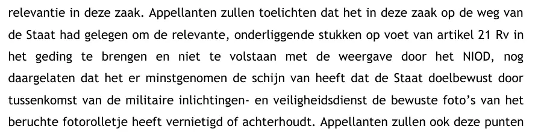

Prueba · Escrito procesal
Madres de Srebrenica, escrito de agravios, 7 de julio de 2015
El ensayo cita dos pasajes de este escrito de agravios; la sección de voces, solo el segundo. Ambos figuran a continuación en el orden del documento.
Punto 18 · La apariencia de que el Estado ha destruido o retiene las fotos
«Los apelantes explicarán que en este asunto correspondía al Estado aportar al proceso los documentos pertinentes subyacentes con arreglo al artículo 21 Rv, y no limitarse a la descripción que de ellos hace el NIOD, dejando aparte que, como mínimo, existe la apariencia de que el Estado, deliberadamente y por mediación del servicio de inteligencia y seguridad militar, ha destruido o retiene las fotos en cuestión del tristemente célebre rollo de película». Página 14, la penúltima frase del punto 18, sobre los documentos que, según los apelantes, el Estado debería haber aportado al proceso. Rv es el Código de Procedimiento Civil neerlandés; el NIOD (Instituto de Estudios sobre la Guerra, el Holocausto y el Genocidio) elaboró el informe oficial sobre Srebrenica. Traducido del neerlandés; el texto original figura a continuación.
“Appellanten zullen toelichten dat het in deze zaak op de weg van de Staat had gelegen om de relevante, onderliggende stukken op voet van artikel 21 Rv in het geding te brengen en niet te volstaan met de weergave door het NIOD, nog daargelaten dat het er minstgenomen de schijn van heeft dat de Staat doelbewust door tussenkomst van de militaire inlichtingen- en veiligheidsdienst de bewuste foto’s van het beruchte fotorolletje heeft vernietigd of achterhoudt.” Texto original

Punto 31 · El libro como fuente sobre el rollo de película
«Hay indicios de que el rollo de Rutten en cuestión se destruyó intencionadamente, o bien de que las fotos en cuestión se revelaron con normalidad y se puso en circulación la historia de que se habría producido un fallo. En un libro publicado recientemente se cita a una empleada del MID que en 1998 se quejó de la cultura del encubrimiento en el MID y mencionó que el rollo de película de Rutten no se había malogrado y que desde entonces se retienen las fotos». Página 23, agravio 1, punto 31. La nota 42 de este párrafo dice: «De Doofpot-Generaal, E. Giltay, SpeakEasy Publisher, 2014, p. 29, 134, 191, 192». En el escrito procesal, el título aparece con guion y con G mayúscula. Traducido del neerlandés; el texto original figura a continuación. De doofpotgeneraal es el título original neerlandés del libro El general del encubrimiento.
“Er zijn aanwijzingen dat het betreffende rolletje van Rutten opzettelijk is vernietigd dan wel dat de betreffende foto’s normaal zijn ontwikkeld en het verhaal de wereld in is geholpen dat sprake zou zijn geweest van een mislukking. In een recent verschenen boek wordt een medewerkster van de MID geciteerd die in 1998 haar beklag deed over de doofpotcultuur bij de MID en er gewag van maakte dat het fotorolletje van Rutten niet was mislukt en dat de foto’s sindsdien worden achtergehouden.” Texto original

Por qué importa este documento
En julio de 2015, las Madres de Srebrenica citaron El general del encubrimiento en su apelación contra el Estado neerlandés, en el pasaje sobre la destrucción de material fotográfico y de video. Sus abogados remitieron a cuatro páginas de la primera edición del libro en las que se cita a una empleada del MID, el servicio de inteligencia militar (Barbara Overduyn, a quien el escrito no nombra), que afirmaba que el rollo de película de Rutten no se había malogrado y que desde entonces se retenían las fotos. Lo invocaron como indicio de que el rollo de Rutten se destruyó intencionadamente, o de que las fotos se revelaron con normalidad y se puso en circulación la historia de un fallo.
Procedencia
- Documento
- Escrito de agravios, 330 páginas
- Órgano jurisdiccional
- Tribunal de Apelación de La Haya
- Número de expediente
- 200.160.317/01
- Autores
- Marco Gerritsen y Simon van der Sluijs, abogados de los apelantes
- Fecha
- 7 de julio de 2015 (fecha de registro en el rol de causas)
- Asunto
- Apelación de las Madres de Srebrenica y de diez familiares de víctimas contra el Estado neerlandés, dirigida contra la sentencia del Tribunal de Distrito de La Haya del 16 de julio de 2014
- Pasaje
- Agravio 1, punto 18, página 14, y punto 31, página 23
- Referencias
- De Doofpot-Generaal (El general del encubrimiento), E. Giltay, SpeakEasy Publisher, 2014, pp. 29, 134, 191 y 192 (nota 42)
- Idioma
- Neerlandés
- Conservado por
- Publicado en PDF en vandiepen.com
- Copia archivada
- Wayback Machine, 27 de septiembre de 2026
Citado en:
- el ensayo «La prohibición cayó, el libro quedó en pie» en los capítulos (5) «Más que un libro prohibido», (11) «Poner fin al silencio sobre Srebrenica» y (12) «No queda otra opción» y en la diapositiva «Tribunal Supremo · 2019» de la presentación «La historia en el mapa»
- la sección de voces bajo el epígrafe «El encubrimiento en torno a Srebrenica»
- la biografía del autor.
Documento: https://
Copia archivada: https://
Consultado el 27 de noviembre de 2026.

Esta página es una ficha de prueba del libro El general del encubrimiento de Edwin Giltay y del sitio web que lo acompaña.